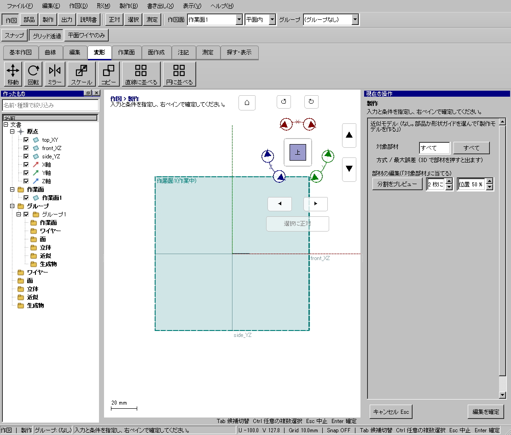
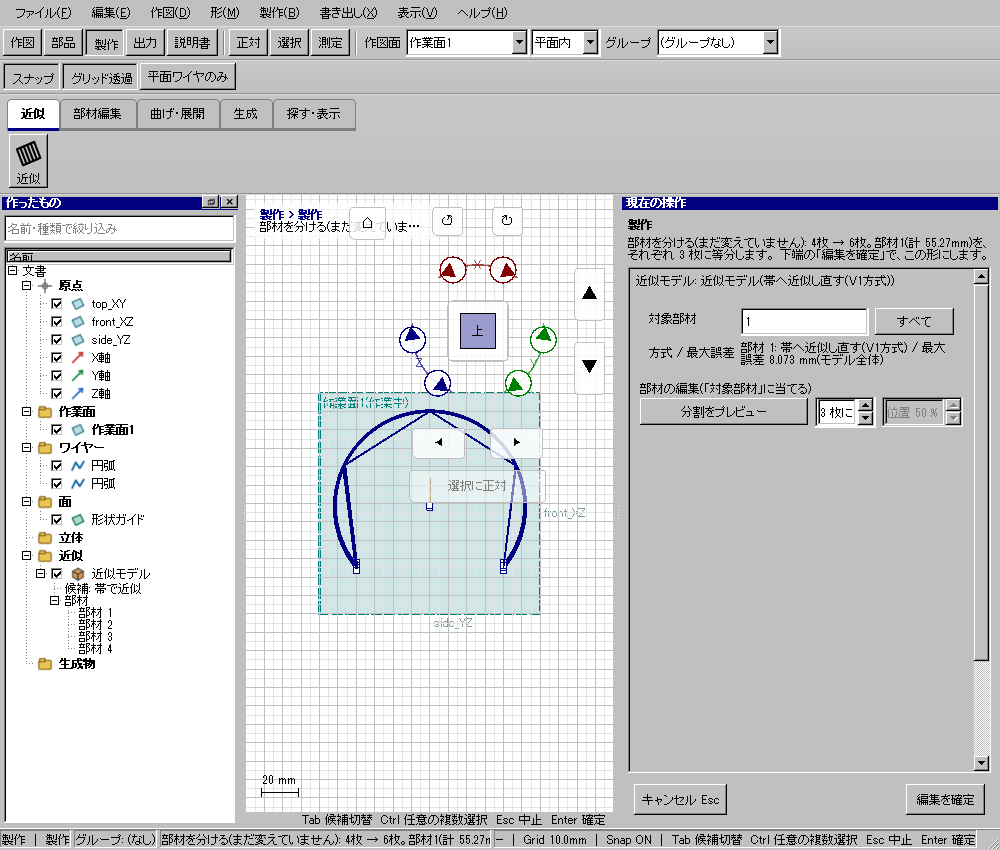

幅広い板材を指定枚数へ分ける
使う機能：部材を分ける
帯近似の1枚または複数部材を分けます。2枚の時だけ位置%を使い、3枚以上は各部材を等分します。
指定した各部材が分かれる。未確定案と設定はEscでも保持。確定後はCtrl+Zで戻せる。
1 準備 — 元の図形から作る
帯近似を確定し、編集する部材番号を確認する。
まだ用意できていなければ、次の手順を先に行ってください。既にモデルがある場合も、例の座標・大きさ・面の向きを自分のモデルへ読み替えます。
- 面から近似モデルを作り、原寸型紙へ進む — 図形の作成から順に練習できます。
練習前にKCD2を別名保存します。数値の長さはmm、角度は度です。平面内のu/vと世界XYZを区別します。
2 使う道具を開く — 押す場所
- 製作 → 部材編集 → 分割
別の入口：Ctrl+K → 部材を分けるを検索 → 候補の用途を確認して開きます。別モードなら「全モードから探す」をオンにします。

3 操作手順 — 一つずつ進める
1 分割を選ぶ
この段階で確認：この操作で使う入力：帯近似を確定し、編集する部材番号を確認する
2 対象部材の番号を入れる
この段階で確認：使う対象・値：2枚では小番号側から位置%。3枚以上は等分。複数部材も指定可
3 分割枚数と2枚時の位置%を設定する
この段階で確認：使う対象・値：2枚では小番号側から位置%。3枚以上は等分。複数部材も指定可
4 分割をプレビューを押す
この段階で確認：使う対象・値：2枚では小番号側から位置%。3枚以上は等分。複数部材も指定可
5 前後の形と警告を確認し編集を確定する
この段階で確認：指定した各部材が分かれる。未確定案と設定はEscでも保持。確定後はCtrl+Zで戻せる。
4 設定する欄と数値
ボタン名・欄名と、今回使う値を対応させてください。項目が出ていない場合は作り方・モードが合っているか確認し、ペイン内をスクロールします。
| 見る欄・役割 | この例の設定と意味 |
|---|---|
| 分割枚数 | 2または3以上 |
| 2枚位置 | 小番号側から% |
| 対象 | 複数可 |
| 下見 | 分割をプレビュー |
| 確定 | 編集を確定 |
選択の確認：役割欄の名前と3Dの強調を照合します。重なって拾いにくい時はTabで候補を替えます。全体を使う例では左一覧の要素名を選び、3Dの1辺選択と区別します。

この実画面は既存操作試験の一場面で、下の数値例の完成画像とは限りません。設定・選択の操作画面。具体的な完成例は段階写真のある作業例を参照してください。
5 確定して結果を確認
条件を入力後、分割／結合をプレビューを押し、前後の形と警告を確認します。同じ条件の下見が表示された後に「編集を確定」を押すと適用します。下見なしでの初回確定は下見作成になります。
指定した各部材が分かれる。未確定案と設定はEscでも保持。確定後はCtrl+Zで戻せる。
形を作る操作では、元と結果の名前を分けて一覧で確認し、必要に応じて元を一時非表示にします。表示だけの機能では形状や要素数を変えることが目的ではありません。
6 取消・やり直し・保存
Escは条件を保ったまま未確定の分割・結合案を破棄します。モードや道具を切り替えても古い案は残しません。確定した部材編集はCtrl+Zで戻します。
モデルの編集正本はKCD2、説明書の編集正本はKCIです。外部へ出力するだけの機能では、出力ファイルと編集元を両方残してください。
進めない場合 — 症状から戻る場所を探す
| 起きていること | 確認して直す場所 |
|---|---|
| 位置%が効かない | 3枚以上では等分 |
| 切れ目だけ欲しい | 部材分割でなく切れ目の役割を使う |
この機能の入力条件：製作モデルを1つ選んでください。
計算中は処理表示を見ます。失敗が出たら、対象・入力条件を変えずに何度も押すのでなく、案内にある対象と条件を確認します。
参考画面の出典と確認範囲
試験名：部材は何枚にでも等分でき隣り合う何枚でも1枚にでき1回で戻り位置も選べる。試験全体の結果：passed。画像はコマンド呼出し直後で、入力待ち・下見の場合もあります。各段階の完成証拠ではありません。